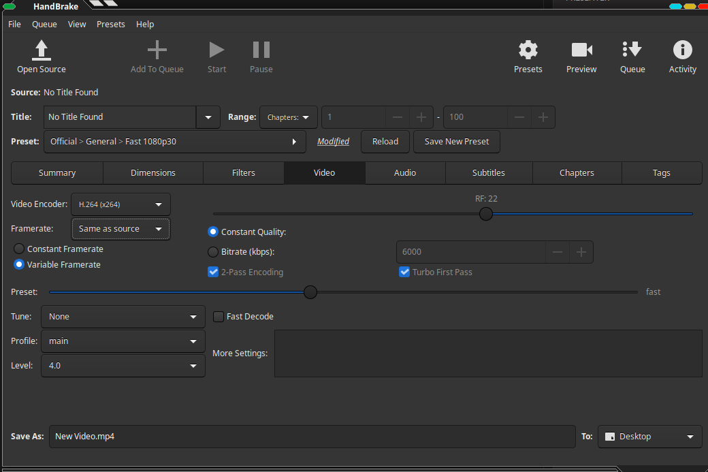
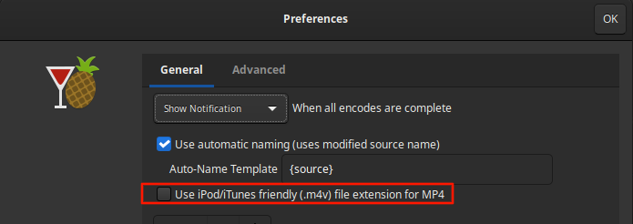

CREATE CONTENT¶
Convert movies to h.264 * .mp4 files¶
Adobe media codecs are unusable proprietary crap!
Real pros use https://handbrake.fr
Make sure to disable Crop under “Dimensions” !!
Under “Video” select:
Framerate: same as source
If you get videos with ending .m4v, disable the check mark in settings:
Create Animations or Video Content¶
I produce all my 2d animations with:
Blender https://blender.org
Natron https://natrongithub.github.io/